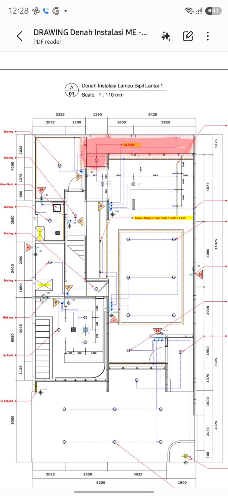

Opening your courtyard…
3D view · cutaway walls

The red region is the modelled courtyard. The three close-ups identify long, return, and left-side windows.
Enable JavaScript for the 3D viewer. Open the source floor plan.